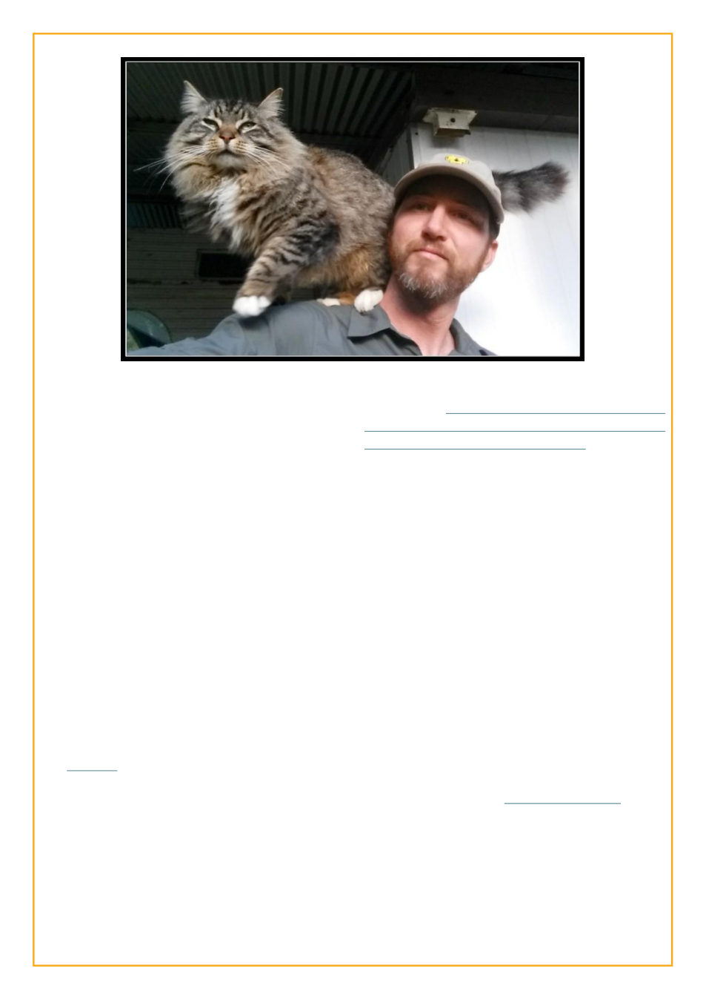

Season X
2016-11-11 - First you hear a buzzing. The
buzzing of bees among the tall straight gum
trees. Then some startled roos burst from the
underbrush, dart across a meadow like a
panicked school of fish, and funnel across a
small wooden bridge over a small creek.
Presently, Kris emerges from the forest, with a
very large cat on his shoulder.
Oh hi. I’ve been sadly sadly neglecting
livejournal as late. Fortunately LJ Idol usually
motivates me to actually post. It’ll be hard
though, I’m busier than ever ::carefully
removes a bee that has landed on the cat::
I’m in Victoria now, the very most
southern part of mainland Australia (further
south than South Australia!), though I think I
was already here as of last season? It’s always
so cold here. So cold. ::shivers::
Alright, back to work. ::returns into the
forest, narrowly avoiding being killed by
a dropbear:: Shortly all you hear is the chirping
of birds and especially the buzzing of bees.
I seem to have dropped out after 8 weeks of this
season. Having made it through posting from deepest
Africa and at sea in prior seasons, at a time when I
was just living normal life as a beekeeper I failed to
post. But this was a time when I’d sometimes go a
month without posting an entry, probably the lowest
point of my livejournal use.
Season XI
2019-09-16 - This time my introduction tells the tale
of my misadventures in the Caribbean with my then-
very-recently-engaged fiancee Cristina.
This season stretches right into covid times,
though none of my LJ Idol entries seems to be about
it. I wrote plenty of other entries about it, indeed I’m
back to posting nearly every day:
Thursday, March 26th - 2,616 active
cases. Things have been surreal. Driving back
from visiting some beehives on a rural road, in
broad daylight a fox is sitting on the road
watching me approach. It’s not until I come to
a stop that she casually walks off. Usually one
just catches a fleeting glance of a fox
disappearing. It’s like nature is taking back the
world, no longer afraid of us. It’s sunny but
cold, there’s plumes of thick white smoke not far
off. Planned burnoff or bushfire? There’s an
app on my phone that should tell me if there’s
bushfires around and it hasn’t gone off, but
things feel very silent. It’s autumn here in
Australia, it feels like the autumn of the world.
When I get back to my house, Koriander has
sent me a voicemessage of her singing the
beautiful melancholy Mingulay Boat Song, so I
step out into the backyard, there’s a light rain
falling despite the sun still shining, and in the
sunny silence of our ruined world I close my
eyes and listen to her heartfelt singing.
 LiveJournal
LiveJournal Dreamwidth
Dreamwidth